今年の金柑は色が青いものが多かったです。
2025/03/19
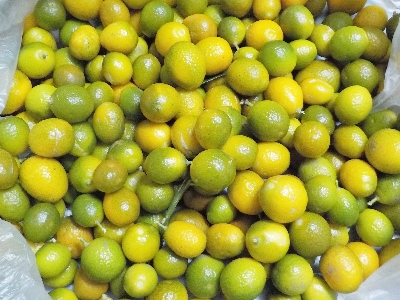
3月の半ばでこの色はどうしたものかな。実も小さいし木が弱っているのかな。
万が一を考えて、タネを採って実生を育てようかな。以前色々やって失敗しているので、今回は注意して育てようかと思います。
柑橘はみんな似ているので、どれがどの種類なのかわからなくなっています。育っているかもしれないけど、果実が出来るまでわかりません。
ネームプレートを付けないといけませんね。
2025/03/19

3月の半ばでこの色はどうしたものかな。実も小さいし木が弱っているのかな。
万が一を考えて、タネを採って実生を育てようかな。以前色々やって失敗しているので、今回は注意して育てようかと思います。
柑橘はみんな似ているので、どれがどの種類なのかわからなくなっています。育っているかもしれないけど、果実が出来るまでわかりません。
ネームプレートを付けないといけませんね。
2024/02/17
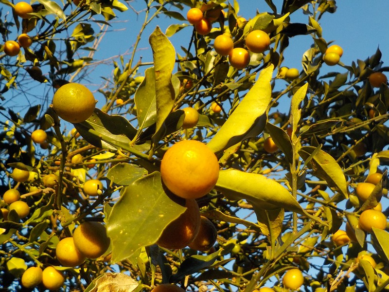
今年の金柑はどうしようかな～。
加工する手間があるかなー。半分にカットして種を取って冷凍したいけど、出来るかな?
2023/02/19
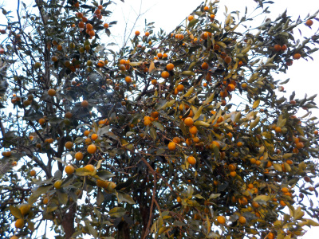
金柑が沢山熟れてます。
食べた方がいいと思うんですが、他に早く食べた方がいいミカンがあるのでそっち優先で食べています。
金柑食べるのは一月後くらいかな。
2023/01/03
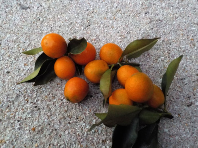
皮は甘かったですが、中はちょっと酸っぱかったです。
我が家の金柑はもうちょっとしてから食べた方がいいかな。
2022/07/05
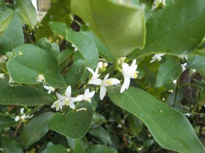
小さい花が沢山開花中です。
小さいので目立ちはしません。
2022/04/10
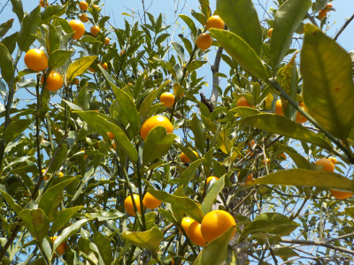
今年はまだドライキンカンを作っていません。
面倒だから。
食べないで放置するのはもったいないので少し収獲しました。種を取ったものを冷凍しようかと思っています。
2022/02/12
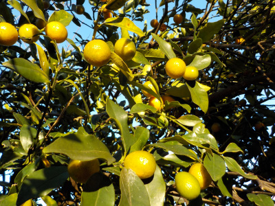
夕日が当って実が黄色くなっています。
実際は少し青いですが、味は美味しくなってます。
今年はどうやって食べようかな？
2021/04/24
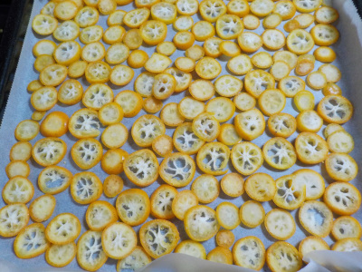
近頃時間があったらコツコツとドライキンカンを作っています。
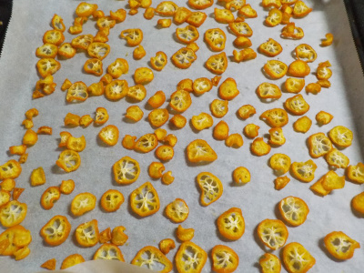
オ－ブンで110度の温度で70分焼きました。
自宅のオーブン性能やクセで焼き上がは色々あると思います。
ネットで検索していると100度60分っていうのもありました。
キンカンの切り方や食感の好みは人それぞれなので、自分の好きなタイプにするのが一番です。
私は日持ちさせたいし、硬めの食感のものを良く噛んで食べるのが好きなので、温度高めで時間長めにしました。
2021/04/10
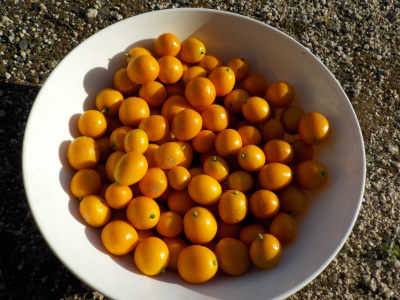
毎年天日干しでドライキンカンを作っていましたが、今年はオーブンで作ることにしました。
なんかオーブンだと電気代高そうな気がしていましたが、調べたらちょっとみたいです。
加熱するとビタミンが破壊されそうと思っていましたが、ビタミンって他の食べ物から沢山摂取しているので、キンカンから採る必要ないなと思ってオーブンにすることにしました。
実際やってみましたが、天日干しより楽でいいですね。
オーブンのトレイに並べれる量しか作れないので、時間がある時にちょっとずつ作ろうと思います。
2020/05/16
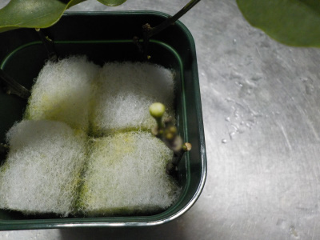
10月に挿し木したキンカンですが、茎に白くて丸いものが出来ました。
葉っぱか花の素ですね。
地味に成長しているようです。
根っこが出ているかも？
2020/04/05
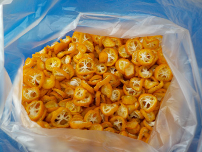
ドライキンカンが出来ました。
手間暇かかりましたが、長く保存して食べれます。
今週も手間暇かけて増産するつもりです。
2020/03/22
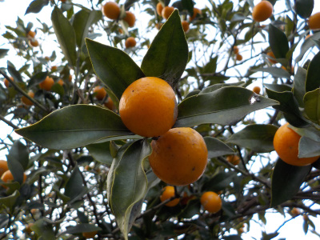
時間があるときにせっせと刻んでドライキンカンを作ろうと思っています。
ドライキンカンはフルーツグラノーラに混ぜて食べます。
2020/02/27
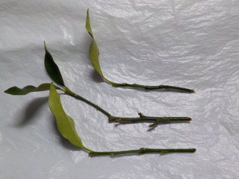
葉っぱが残ったままなので挿し木に成功したかと思ったんですが、根っこはありませんでした。
今後どうなるんでしょうね？
枯れるまで水挿し続行です。
2019/11/02

あまり変化がありません。
意外と成功するかも。
2019/10/20
スポンジを水に漬けて水挿しです。

1週間経ちましたが、変化はありません。
2019/09/28
1本だけ緑の状態です。
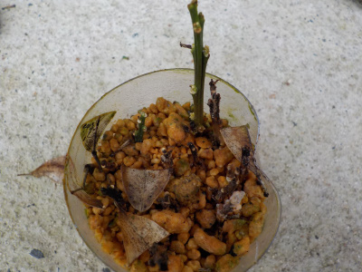
ペットボトルから出してポットに植え替えします。
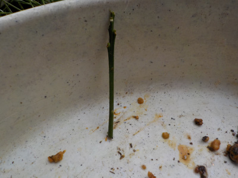
取り出して見たところ根っこはないです。
根っこないので多分枯れますね。
2019/08/04
まばらですが沢山咲いてます。
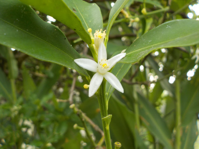
うちのキンカンはとっても大きく、毎年食べきれません。
いまでも実が付いてます。
来年も大量に出来るんだろうな。
2019/07/15
キンカンの挿し木に挑戦です。
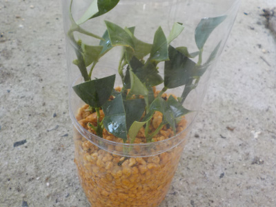
どうなるでしょうね。
なんでもやってみないと分らないですよね。
成功・失敗の判定はどれくらいで決まるのかなー。
2019/04/03
カチカチに乾きました。
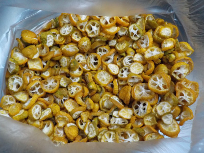
これで保存できます。
まだ木にキンカンがあるので、追加して作るか検討中です。
2019/03/24
ドライキンカンを作るため、キンカンを干しました。
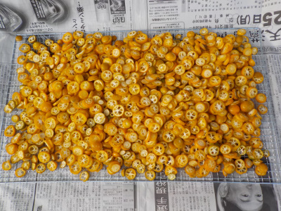
100均のバーベキュー用の網を使いました。
安くて、大きくて便利な商品です。今後干し物をする時は活用しようと思います。
2018/02/11
畑は雪で何もする気がしませんが、木の上は収獲出来ました。
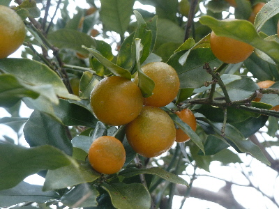
見た目は少し青いですが、食べてみたら美味しかったです。
今年は何して食べようかな。
2017/03/31
保存して食べれるように干してみようと思います。
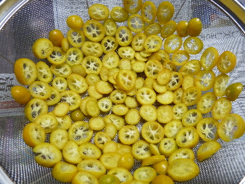
金柑のドライフルーツです。
乾燥したら冷蔵庫に入れて、気が向いたらパクパクつまんで食べようと思います。
2016/03/06
金柑がちょっと青いけど、美味しくなっていました。
2015/04/18
キンカンをつまみました。
2014/04/06
金柑が食べ頃になりました。
2014/03/02
キンカンが食べられてる。
2013/06/02
金柑がまだ木に成っています。
畑仕事じゃないよ。